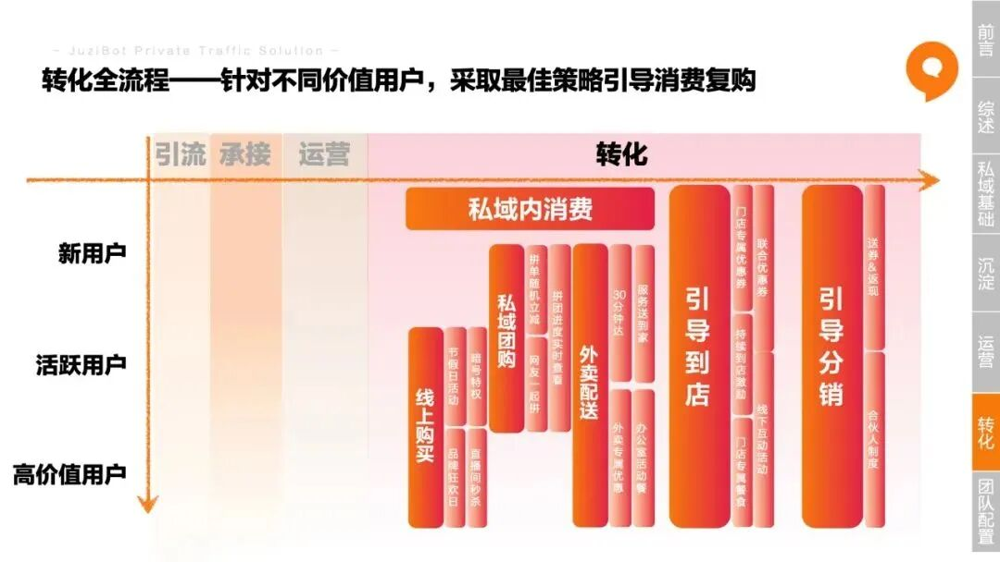
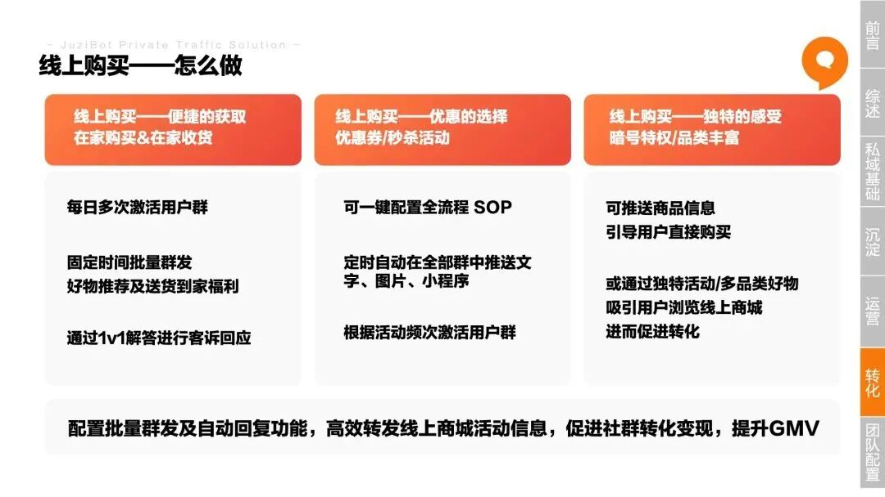
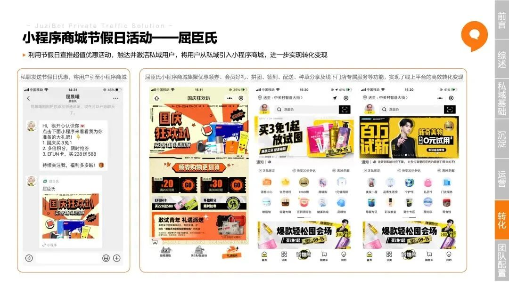
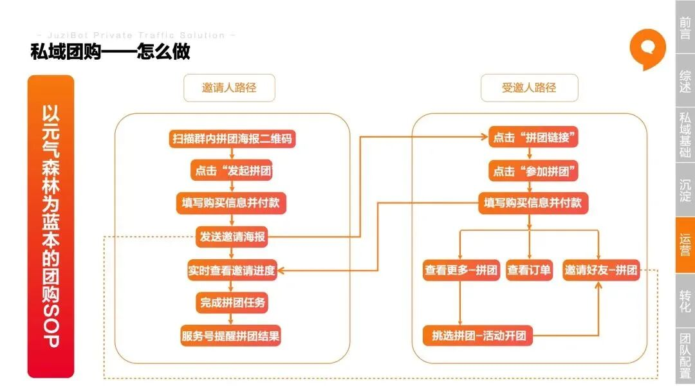
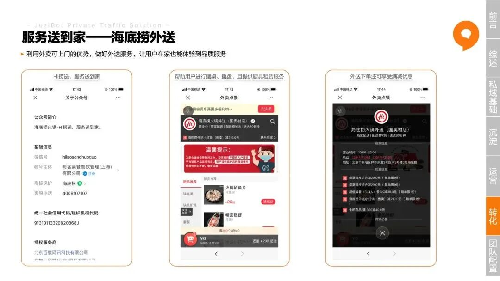
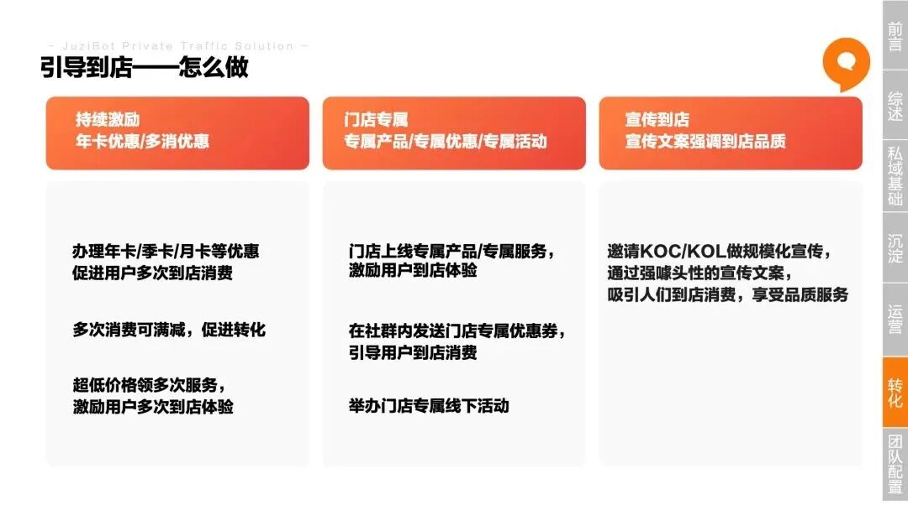
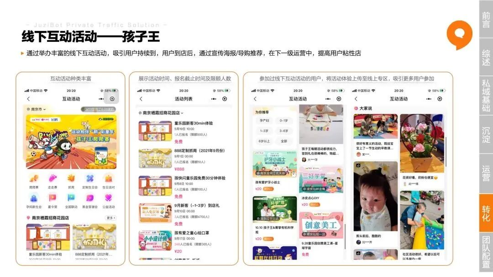
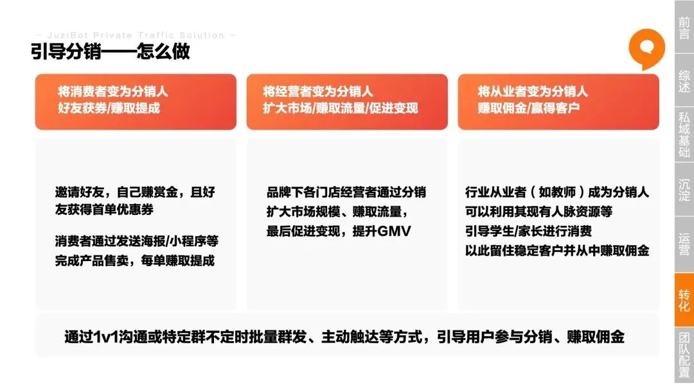
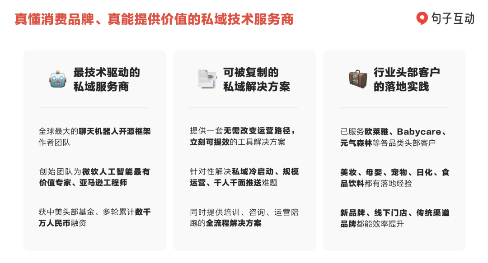

私域内消费
1.1 线上购买
从消费者角度来看，线上购买无需置身线下，即可实现更便捷的获取；依托私域社群，将抢购的优惠券等用于线下购买，还可尝试更优惠的选择；此外，利用私域内特权以及线上小程序的品类多样性，于购买时体验更独特的感受。

以屈臣氏为例，该企业通过在私域内的不断触达，利用各种优惠将用户引流至屈臣氏线上小程序商城。线上商城内集聚了优惠领券、会员好礼、拼团、签到、配送、种草分享及线下门店专属服务等功能，助力企业实现线上平台的高效转化变现。

白皮书中还分析了快餐店、服装店以及药店等门店的线上购买实例，此处不再一一列举。
1.2 私域团购
当企业想在打通“老带新”模式的同时，利用更多的社交关系促进销售转化，“私域团购”的模式就应运而生了。私域团购本质上是一套通用的逻辑，由于使用条件、参与规则以及传播媒介等的不同，可以衍生出多种多样的场景。在白皮书中，我们以元气森林为例，为门店企业提供一种新的私域团购SOP：

在撰写白皮书的过程中，我们团队也看到了更多门店企业的私域团购玩法，例如屈臣氏将传统的好友拼团模式改为网友拼团模式，使成团速度更快，消费者参与度更高，于短时间内带来大量转化变现；又如奈雪的茶会在拼单成功后，以支付可享随机立减的方式激励消费者，促进转化变现……
1.3 外卖配送
很多门店企业都开通了外卖配送的服务，如饭店、药店、花店等。但与美团、饿了么等不同的是，这些门店在将企业服务、门店优惠送到家的同时，更是利用面对面的交流实现了将陌生用户引入私域、将私域用户打磨韧性的目的。
海底捞外送便是一个很好的例子。在消费者点餐外送时，海底捞会提供上门摆盘服务，让消费者在家也能体验到品质服务。既拉近了与消费者的距离，也做好了私域流量的维系。

引导到店消费
对于门店企业来说，让消费者从私域回流到门店、带动门店客源增长是极为重要的。可以通过线上推送年卡优惠/多消优惠的引导的持续激励活动、以专属产品/专属优惠/专属活动为导向的门店专属福利、以到店品质为依托的到店宣传等，以期实现高比率的老客回流。

对于母婴门店行业来说，持续的到店引导不仅能够激励门店源源不断的客源、也能激励消费者持续到店消费，还能利用线下活动等增强与消费者的联系、提升消费者信任感、增大粘性。

私域引导分销
私域运营最好的结果，一定是让顾客成为“员工”，分销就是达成这一结果的有效途径，也是企业和用户双赢的策略。

Lemonbox的多层级裂变式分销模式，不仅可以让分享者获得现金奖励，也会让好友通过折扣优惠购买相应产品，这种方式更容易让新的购买者成为下一个分销者。句子互动的合作伙伴“全球蛙”就在致力于帮助连锁门店发动店员、会员的积极性，提升业务量。感兴趣可以搜索了解，或联系文末二维码找到我们。
消费品行业我们与美宝莲纽约、Wonderlab、Babycare、元气森林等并肩作战； 教育行业我们服务了猿辅导、一起作业、网易有道和亿学教育； 线上服务行业我们帮助58同城、啄木鸟科技、元保保险等团队提升了运营效率。
